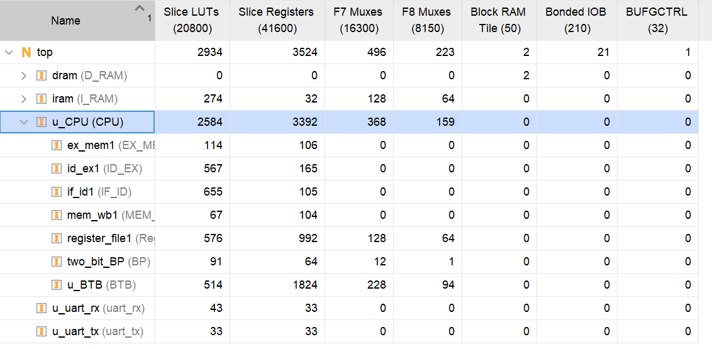

流水线MIPS处理器设计
毛顺宇 2021012728
2023 年 8 月 5 日
1 设计目的
设计一个 5 级流水线的 MIPS 处理器，能够支持数码管、UART外设，并利用此处理器完成最短路径算法
2 设计方案
2.1 系统框图

2.2 设计方案
- 采用
IF - ID - EX - MEM - WB五级流水线设计 - 对于
J型指令在ID阶段跳转 - 对于
Load-Use冒险阻塞一个周期 - 对于条件分支指令采用2Bit计数器分支预测
IF阶段预解码以进行分支预测- 查询
BTB以获得分支跳转地址 BTB使用直接相联32B容量
3 关键代码
3.1 文件清单
- rtl
-- tb_CPU_top.v 测试
-- CPU_top.v 顶层文件
-- CPU.v 数据通路
-- Control.v 控制信号
-- ALUControl.v ALU控制信号
-- Forward.v 前递模块
-- Hazard.v 冒险模块
-- IF_ID.v 流水线寄存器
-- ID_EX.v 流水线寄存器
-- EX_MEM.v 流水线寄存器
-- MEM_WB.v 流水线寄存器
-- ALU.v ALU模块
-- RegisterFile.v 寄存器文件
-- BP.v 分支预测器
-- BTB.v 跳转地址表
-- MMU.v 内存地址映射
-- uart_rx.v 串口接收
-- uart_tx.v 串口发送
- code
-- Bellman.c C语言源代码
-- Bellman.asm 汇编代码
- coe
-- lab.coe 指令文件
-- data.coe 数据文件
（修复了验收代码提交中未发现的bug）
3.2 数据通路
ID stage
// Control.v // 判断分支类型 always @(*) begin case (OpCode) 6'h04: Branch_Type<=3'b000; 6'h05: Branch_Type<=3'b001; 6'h06: Branch_Type<=3'b010; 6'h07: Branch_Type<=3'b011; 6'h01: Branch_Type<=3'b100; default: Branch_Type<=3'b000; endcase end // CPU.v // ID阶段立即数以及跳转地址计算 assign ID_Ext_out = {ID_ExtOp ? {16{ID_Instruction[15]}} : 16'h0000, ID_Instruction[15:0]}; assign ID_Lu_out = ID_LuOp ? {ID_Instruction[15:0], 16'h0000} : ID_Ext_out; ///////////////////// // 从MEM级Forward以解决数据冒险 assign ID_comp_a = (ID_Forward_A == 1) ? MEM_ALU_out : ID_Databus1; assign ID_comp_b = (ID_Forward_B == 1) ? MEM_ALU_out : ID_Databus2; ///////////////////// assign ID_Zero = (ID_Branch_Type==3'b000)?(ID_comp_a == ID_comp_b): (ID_Branch_Type==3'b001)?(ID_comp_a != ID_comp_b): (ID_Branch_Type==3'b010)?(ID_comp_a <= 0): (ID_Branch_Type==3'b011)?(ID_comp_a > 0): (ID_Branch_Type==3'b100)?((ID_Instruction[20:16]==0)?(ID_comp_a < 0):(ID_comp_a >= 0)):0;
EX stage
//RegisterFile.v //先写后读 assign Read_data1 = (Read_register1 == 5'b00000) ? 32'h00000000 : (Read_register1==Write_register && RegWrite) ? Write_data:RF_data[Read_register1]; assign Read_data2 = (Read_register2 == 5'b00000) ? 32'h00000000 : (Read_register2==Write_register && RegWrite) ? Write_data:RF_data[Read_register2];
// 从MEM或者WB级Forward以解决数据冒险 assign EX_Data_in1=(EX_Forward_A==2'b01)?WB_Databus3:(EX_Forward_A==2'b10)?MEM_ALU_out:EX_Databus1; assign EX_Data_in2=(EX_Forward_B==2'b01)?WB_Databus3:(EX_Forward_B==2'b10)?MEM_ALU_out:EX_Databus2;
MEM stage
//MMU.v //判断是否在访存外设 always @(*) begin if (rst) begin MEM_out <= 0; is_peri <= 0; end else begin if (MEM_in[31:28] >= 4'h4) begin MEM_out <= {MEM_in[31:28] - 4'h4, MEM_in[27:0]}; is_peri <= 1; end else begin MEM_out <= MEM_in; is_peri <= 0; end end end //CPU_top.v MMU u_MMU ( .rst (rst), .PC_in (IF_PC), .MEM_in (MemAddress), .PC_out (phy_Instr_Addr), .MEM_out(phy_Data_Addr), .is_peri(is_peri) ); //使用BRAM作为数据存储器 D_RAM dram ( .clka (nclk), // input wire clka .wea (MemWrite & (~is_peri)), // input wire [0 : 0] wea .addra(phy_Data_Addr[12:2]), // input wire [10 : 0] addra .dina (MemWriteData), // input wire [31 : 0] dina .douta(Dram_ReadData) // output wire [31 : 0] douta ); assign MemReadData = is_peri ? Peri_ReadData : Dram_ReadData; wire rx_ready; reg rx_avai; wire tx_busy; reg tx_start; reg tx_done; wire o_Tx_Done; //Only High for 1 Cycle reg [7:0] uart_txd; wire [7:0] uart_rxd; always @(posedge clk or posedge reset) begin if (reset) begin leds <= 0; ans <= 0; Peri_ReadData <= 0; tx_start <= 0; end else begin if (is_peri) begin case (phy_Data_Addr[7:0]) 8'h10: begin if (MemWrite) begin leds <= MemWriteData[7:0]; ans <= MemWriteData[11:8]; end end 8'h18: begin //txd if (MemWrite && !tx_busy) begin tx_start <= 1; uart_txd <= MemWriteData[7:0]; end end 8'h1c: begin //rxd if (MemRead) Peri_ReadData <= uart_rxd; end 8'h20: begin //con if (MemRead) Peri_ReadData <= {tx_busy, rx_avai, tx_done, 2'b0}; end endcase end end end always @(posedge clk or posedge reset) begin if (reset) rx_avai <= 0; else if (rx_ready) rx_avai <= 1; else if (is_peri && phy_Data_Addr[7:0] == 8'h20 && MemRead && rx_avai) rx_avai <= 0; end always @(posedge clk or posedge reset) begin if (reset) tx_done <= 0; else if (o_Tx_Done) tx_done <= 1; else if (is_peri && phy_Data_Addr[7:0] == 8'h20 && MemRead && tx_done) tx_done <= 0; end
3.3 前递模块
module Forward ( input [ 31:0] ID_Instruction, input [1 : 0] ID_PCSrc, input ID_Branch, input MEM_RegWrite, input [ 4:0] MEM_Write_register, output reg ID_Forward_A, output reg ID_Forward_B, input [31:0] EX_Instruction, input WB_RegWrite, input [ 4:0] WB_Write_register, output reg [ 1:0] EX_Forward_A, output reg [ 1:0] EX_Forward_B ); always @(*) begin // ID阶段是分支指令并且MEM级写回寄存器与读取寄存器相同 if(MEM_RegWrite && MEM_Write_register==ID_Instruction[25:21] && MEM_Write_register!=0 && (ID_PCSrc[0]||ID_Branch)) ID_Forward_A <= 1; else ID_Forward_A <= 0; if(MEM_RegWrite && MEM_Write_register==ID_Instruction[20:16] && MEM_Write_register!=0 && (ID_PCSrc[0]||ID_Branch)) ID_Forward_B <= 1; else ID_Forward_B <= 0; end always @(*) begin //MEM级写回寄存器与EX级读取寄存器相同 if (MEM_RegWrite && MEM_Write_register != 0 && MEM_Write_register == EX_Instruction[25:21]) EX_Forward_A <= 2'b10; //WB级写回寄存器与EX级读取寄存器相同 else if (WB_RegWrite&&WB_Write_register!=0&&WB_Write_register==EX_Instruction[25:21] &&(MEM_Write_register!=EX_Instruction[25:21]||~MEM_RegWrite)) EX_Forward_A <= 2'b01; else EX_Forward_A <= 2'b00; if (MEM_RegWrite && MEM_Write_register != 0 && MEM_Write_register == EX_Instruction[20:16]) EX_Forward_B <= 2'b10; else if (WB_RegWrite&&WB_Write_register!=0&&WB_Write_register==EX_Instruction[20:16] &&(MEM_Write_register!=EX_Instruction[20:16]||~MEM_RegWrite)) EX_Forward_B <= 2'b01; else EX_Forward_B <= 2'b00; end endmodule
3.4 冒险模块
module Hazard ( input ID_Branch, input ID_Zero, input wire [1 : 0] ID_PCSrc, input wire [ 31:0] ID_Instruction, input ID_Update, input EX_RegWrite, input EX_MemRead, input wire [4 : 0] EX_Write_register, input MEM_MemRead, input wire [4 : 0] MEM_Write_register, output reg Stall, output reg IF_Flush, output reg ID_Flush ); always @(*) begin //ID阶段如果是J型指令或者预测错误，同时当前流水线不处于阻塞状态时需要清空PC和IF/ID寄存器 IF_Flush <= ((ID_PCSrc != 2'b00) || (ID_Update)) && ~Stall; end always @(*) begin //Load-Use冒险 if(EX_MemRead && (EX_Write_register == ID_Instruction[25:21] || EX_Write_register == ID_Instruction[20:16]) && EX_Write_register!=0) begin Stall <= 1; ID_Flush <= 1; end // ID级是条件跳转或者Jr/Jalr，并且EX级写回寄存器与ID级读取寄存器冲突 else if((ID_Branch == 1 || ID_PCSrc[1] == 1) && (EX_Write_register == ID_Instruction[25:21] || EX_Write_register == ID_Instruction[20:16]) && EX_RegWrite && EX_Write_register!=0) begin Stall <= 1; ID_Flush <= 1; end // ID级是条件跳转或者Jr/Jalr，并且MEM级要读内存且写回寄存器与ID级读取寄存器冲突 else if((ID_Branch == 1 || ID_PCSrc[1] == 1) && (MEM_MemRead && (MEM_Write_register == ID_Instruction[25:21] || MEM_Write_register == ID_Instruction[20:16])) && MEM_Write_register!=0) begin Stall <= 1; ID_Flush <= 1; end else begin Stall <= 0; ID_Flush <= 0; end end endmodule
3.5 分支预测器

module BP ( input clk, input reset, input wire [31:0] PC, input wire [31:0] PC_Update, input wire [ 5:0] OpCode, input wire Update, input Branch_Actual, output wire Is_Branch, output reg Branch_likely ); //使用PC低位进行寻址 wire [4:0] tag = PC[6:2]; wire [4:0] tag_update = PC_Update[6:2]; reg [1:0] Branch_State [31:0]; //0 --> Not Taken ; 1 --> Taken assign Is_Branch=(OpCode==6'h01)||(OpCode==6'h04)||(OpCode==6'h05)||(OpCode==6'h06)||(OpCode==6'h07); always @(*) begin if (Is_Branch) begin Branch_likely <= Branch_State[tag][1]; end else Branch_likely <= 0; end integer i; always @(posedge clk or posedge reset) begin if (reset) begin for (i = 0; i < 32; i = i + 1) Branch_State[i] <= 2'b01; end else begin //分支指令发生判断时进行更新 if (Update) begin case (Branch_State[tag_update]) 2'b00: begin if (Branch_Actual) Branch_State[tag_update] <= 2'b01; else Branch_State[tag_update] <= 2'b00; end 2'b01: begin if (Branch_Actual) Branch_State[tag_update] <= 2'b10; else Branch_State[tag_update] <= 2'b00; end 2'b11: begin if (Branch_Actual) Branch_State[tag_update] <= 2'b11; else Branch_State[tag_update] <= 2'b10; end 2'b10: begin if (Branch_Actual) Branch_State[tag_update] <= 2'b11; else Branch_State[tag_update] <= 2'b01; end default: Branch_State[tag_update] <= Branch_State[tag_update]; endcase end end end endmodule
3.6 跳转地址表
module BTB ( input clk, input reset, input Update, input wire [31 : 0] PC, input wire [ 31:0] PC_Update, output reg [ 31:0] Branch_Pred_target, input wire [ 31:0] Branch_Update_target, output reg BTB_Hit ); //使用PC低位进行寻址 wire [ 4:0] index = PC[6:2]; wire [ 4:0] index_update = PC_Update[6:2]; wire [24:0] tag = PC[31:7]; wire [24:0] tag_update = PC_Update[31:7]; reg [56:0] btbs [31:0]; // 56--------32 - 31------0 //高位存储Index 低位存储跳转地址 always @(*) begin Branch_Pred_target <= btbs[index][31:0]; BTB_Hit <= tag == btbs[index][56:32]; end integer i; always @(posedge clk or posedge reset) begin if (reset) begin for (i = 0; i < 32; i = i + 1) btbs[i] <= 57'b0; end else begin //分支指令发生判断时更新跳转地址 if (Update) begin btbs[index_update] <= {tag_update, Branch_Update_target}; end end end endmodule
//CPU.v BP two_bit_BP ( .clk (clk), .reset (reset), .PC (IF_PC), .PC_Update (ID_PC), .OpCode (IF_Instruction[31:26]), //分支指令判断时并且流水线不阻塞则进行状态机更新 .Update (ID_Branch & ~Stall), .Branch_Actual(ID_Branch_Actual), .Is_Branch (IF_Is_Branch), //猜测结果 .Branch_likely(IF_Branch_likely) ); BTB u_BTB ( .clk (clk), .reset (reset), .Update (ID_Branch & ~Stall), .PC (IF_PC), .PC_Update (ID_PC), //猜测地址 .Branch_Pred_target (IF_BTB_target), //实际地址 .Branch_Update_target(ID_PC_plus_4 + {ID_Lu_out[29:0], 2'b00}), //是否命中 .BTB_Hit (IF_BTB_Hit) ); // IF stage always @(posedge reset or posedge clk) begin if (reset) IF_PC <= 32'h00400000; else if (Stall) IF_PC <= IF_PC; //IF是跳转指令并且上一条指令猜对了或者就不是跳转指令 else if (IF_Is_Branch && ~ID_Update) IF_PC <= IF_Branch_Pred_target; //IF不是跳转指令但是上一条是跳转指令 else if (~IF_Is_Branch && ID_PCSrc == 2'b00) IF_PC <= IF_Branch_normal; //IF是跳转指令但是上一条指令猜错了 或者 IF不是跳转指令而且上一条也不是跳转指令 else IF_PC <= IF_PC_next; end //是否真的要跳转 assign ID_Branch_Actual = ID_Branch & ID_Zero; //猜测的和真实的情况不一致则可能要刷新流水线 assign ID_BR = (ID_Branch_Actual ^ ID_Branch_likely); //如果不是分支指令则不更新否则 //如果猜测的是不跳转则不一致便刷新 //如果猜测的是跳转，则要考虑BTB是否命中 assign ID_Update = (ID_Branch_likely ? ~(ID_BTB_Hit ^ ID_BR) : ID_BR) & ID_Branch; //J/Jal跳转地址 assign IF_Jump_target = {ID_PC_plus_4[31:28], ID_Instruction[25:0], 2'b00}; //预测不跳转或是BTB未命中则正常执行，否则跳转到BTB中的地址 assign IF_Branch_Pred_target = IF_Branch_likely ? IF_BTB_Hit ? IF_BTB_target : IF_PC_plus_4 : IF_PC_plus_4; //确实需要刷新流水线时跳转到Branch地址或者PC+4 assign IF_Branch_normal = ID_Update ? IF_Branch_target : IF_PC_plus_4; assign IF_Branch_target = ID_Branch_Actual ? ID_PC_plus_4 + {ID_Lu_out[29:0], 2'b00} : ID_PC_plus_4 ; //正常执行时的地址或者ID阶段的跳转地址 assign IF_PC_next = (ID_PCSrc == 2'b00) ? IF_Branch_target : (ID_PCSrc == 2'b01) ? IF_Jump_target : ID_comp_a;
4 综合情况
4.1 资源利用情况

三个流水线寄存器使用近一半的LUT资源，BTB使用了过半的寄存器资源
4.2 时序情况
关键路径位于ID Forward、IF阶段取指、预解码、查询分支预测器，在没有加入分支预测器时的时序为，下降约。
5 性能分析
MARS模拟器花费个周期，CPU仿真花费个周期，IPC为
总计条件跳转指令条，猜测错误条，分支预测错误率
IPC偏低的可能原因：
- J型指令没有做预测
- 对于有阻塞的条件跳转，预测错误时花费三个周期，预测正确花费两个周期，反而不如默认不跳转
- 分支预测逻辑路径过长，可以划分成多级流水
6 思想体会
流水线是一个很庞大的工程，实现的过程中虽然有很多挫折，但我也有很多收获
我首先基于单周期处理器改造了一个流水线的版本，但是在后续的仿真中出现了一系列问题，特别是在流水线阻塞和清空的判断上，总是和我的预想相悖，但是通过解决一个又一个的问题我也认识到在工程实践中遇到的冒险情形远比课上讲过的几种要更复杂，不断的修改过程也带来了许多收获感。
虽然我没有出现仿真正确但上板不对的情况，但室友们都出现了这种问题，通过围观他们的解决过程，我意识到写一个规范的Verilog代码是多么重要，我们的眼中不能只有Error，还要有Warning。
随后试图加入分支预测更是困难重重。这需要修改前两级流水线的控制行为，最终的代码包含大量的判断语句，大大降低了代码的可读性，也不能确定其功能是不是完全正确。分支预测的加入还使得电路的时钟速度下降很严重，并且综合工具给出的关键路径实在是难以读懂，最终也没有优化到一个很好的频率上。
另外虽然我没有在验收时使用串口作为数据输入输出，但是我也按照龙芯杯的要求实现了UART，实现的过程也是困难多多。
总而言之，这此大作业使得我的代码编写与调试能力大大提高，加深了对于硬件电路的理解，更锻炼了我的耐心。最后感谢老师、助教和同学们的帮助！